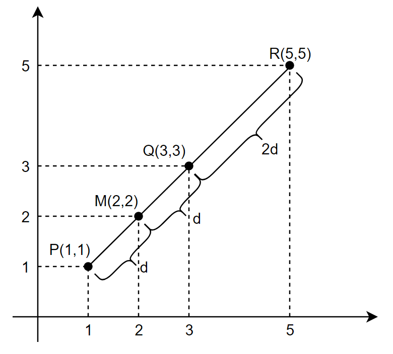

1.13. Reflection Point ¶
Given two points \(P(p_x, p_y)\) and \(Q(q_x, q_y)\) in the two-dimensional plane, we name the point that is in the middle of the two points the mid point, \(M(m_x,m_y)\), and the point that is the 180° rotation of \(P\) around \(Q\) the reflection point, \(R(r_x,r_y)\).
Consider the following case:

Given \(P(1,1)\) and \(Q(3,3)\), we say the mid point \(M\) is \(M(2,2)\) and the reflection point \(R\) is \(R(5,5)\). It can be seen from the figure that, \(Q\) is the mid-point of \(P\) and \(R\), so the distance from \(P\) to \(Q\) and the distance from \(Q\) to \(R\) are the same.
Write a program that takes 4 integers as input from the user, the coordinates of \(P\) and \(Q\) (in the order :math:`p_x, p_y, q_x, q_y`), and prints their mid point and the reflection point in the order \(m_x, m_y, r_x, r_y\) as floats with 2 digits after the decimal point.
Sample I/O:
Input:
1
1
3
3
Output:
2.00
2.00
5.00
5.00
Input:
-1
-1
1
1
Output:
0.00
0.00
3.00
3.00
Input:
4
5
1
2
Output:
2.50
3.50
-2.00
-1.00
px = int(input())
py = int(input())
qx = int(input())
qy = int(input())
mx = (px + qx) / 2
my = (py + qy)/2
rx = qx + (qx - px)
ry = qy + (qy - py)
print('%.2f' % mx)
print('%.2f' % my)
print('%.2f' % rx)
print('%.2f' % ry)